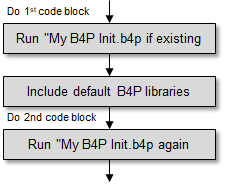

Introduction
If a file called My B4P Init.b4p is avaiable in the directory for user application data, then it will be loadeod executed: The directory name is specified in the system variable system info[user app data directory b4p] and is typically
- Windows: C:\users\Your User Name\AppData\Local\b4p
- Linux/MacOS: /home/username/.profile/b4p/
This file will be executed twice, namely before the library files are loaded, and after this. For this reason, the template code prepared
in this file makes use of the once() {...} else {...} clause where the first code block after once is executed at the first
instance, and the code block after else is executed at the 2nd instance.

The original file My B4P Init.b4p provided to you contains the following simple contents: Silencing output messages while loading
the libraries by setting system info[verbose] to quiet, and in the 2nd call back to low to allow minimum messages
and progress information to occur. See verbose for more information about this.
once // Following code is executed at the 1st call before loading library files begins
{
// echo("Starting to load the standard library files ...");
runtime settings[verbose] = quiet;
}
else // Following code is executed at the 2nd call after all library files have been loaded
{
// echo("... Done.");
runtime settings[verbose] = low;
}